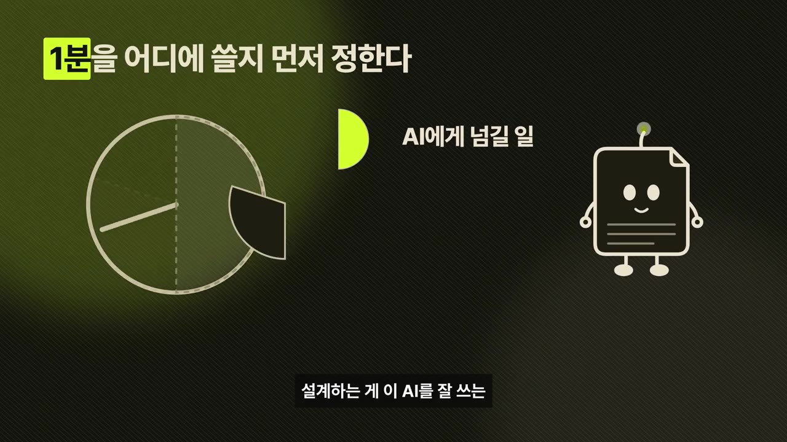
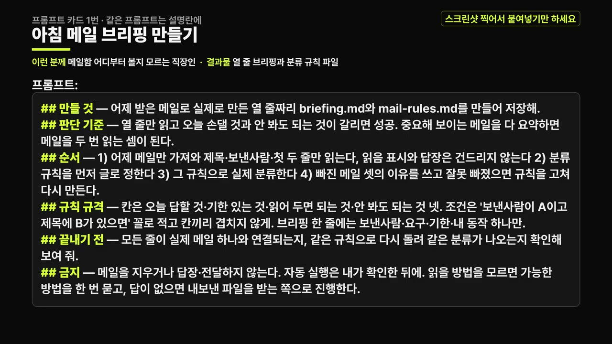
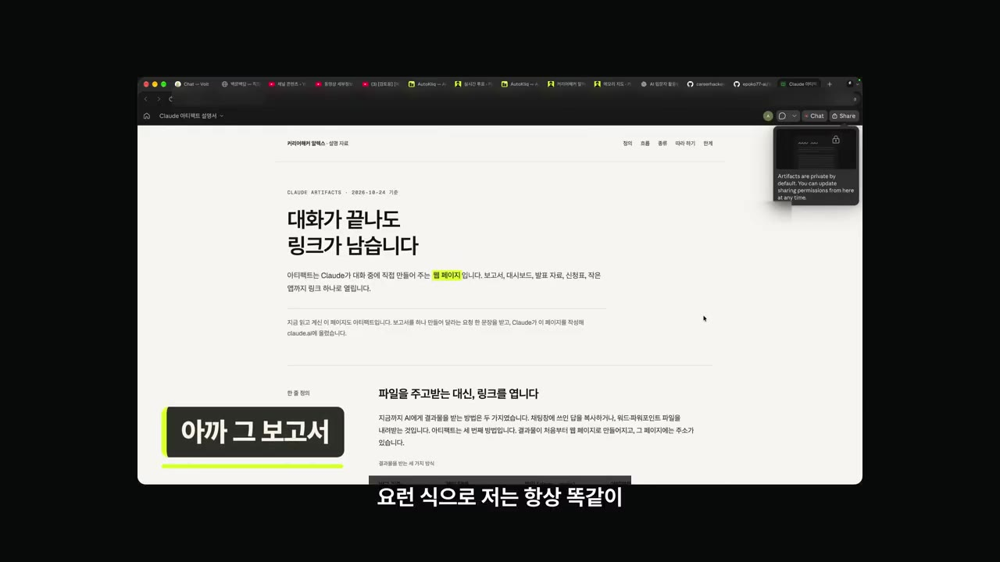
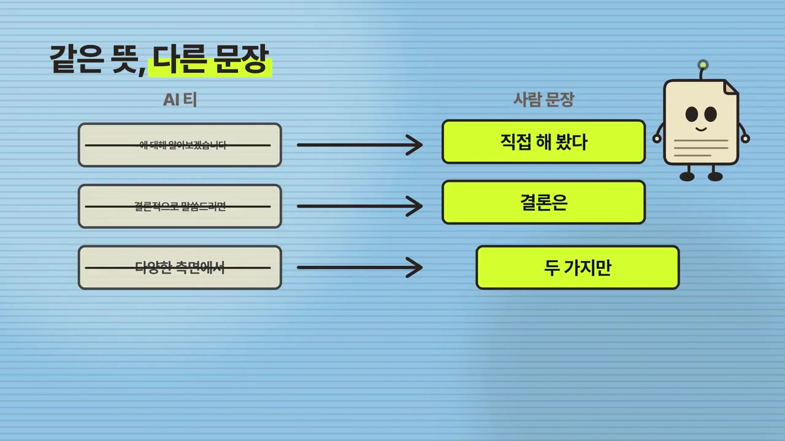
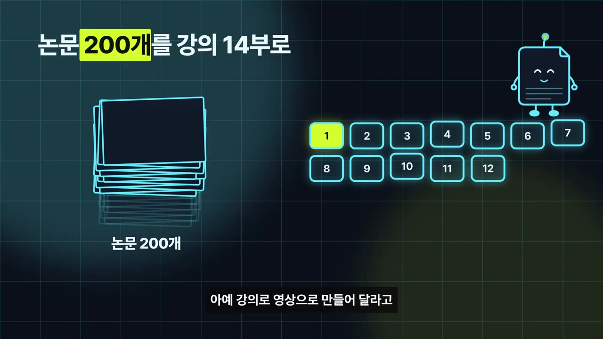
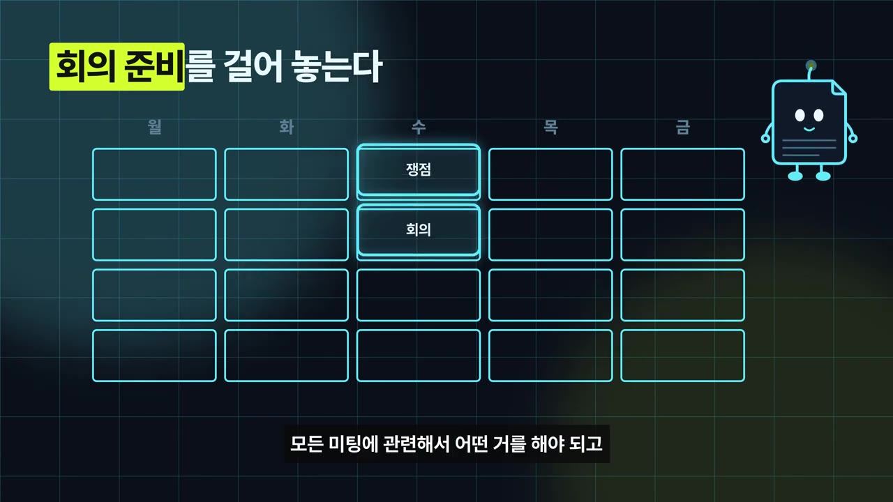
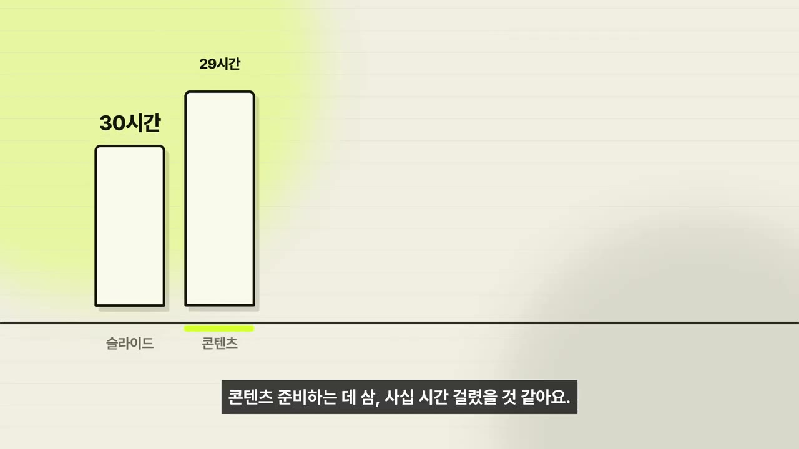

AI로 나의 1분을 소중하게 만드는 법 | 메일·회의록·PDF 넘기기
▶ 원본 영상 보기한눈에 보기
- 아침 메일·회의록·보고서·긴 PDF·영어 메일 같은 반복 업무를 AI에 넘겨 "내 1분의 가치"를 지키는 것이 핵심 전략이다(영상 속 주장).
- 메일은 매일 아침 요약·분류 브리핑으로, 회의는 전사 후 요약과 에이전트 위임으로, 보고서는 형식을 스킬로 굳혀 항상 같은 포맷으로 만든다.
- 100장 PDF나 논문 200편은 사람이 직접 읽는 것보다 AI 요약이 더 믿을 만하다고 주장하지만, 중요한 보고서는 본인이 끝까지 읽고 고친다.
- 영어 메일은 번역이 아니라 받는 사람의 직급, 관계, 메일 이후 일어나야 할 일 세 가지를 넣어 쓰게 한다.
- 발표자는 200시간 걸릴 강의 제작을 하루(실제 프롬프트 작업은 약 5시간)에 끝낸 경험을 근거로 업무 시간 대폭 단축이 가능하다고 말한다.
이런 분께 도움이 됩니다
- 메일·회의·보고서 때문에 월요일 아침이 무거운 직장인.
- AI에 업무를 맡기고 싶지만 어디부터 시작할지, 어디까지 믿을지 감이 없는 분.
핵심 내용
관점: 사람의 주의(attention)를 아낀다
- AI를 잘 쓰는 핵심은 내 1분이 얼마나 가치 있는지 설계하고, 노이즈를 줄이는 것이라고 본다. (0:29, 1:02)
- 회의 내용을 손으로 옮겨 적는 시대는 끝났다고 주장한다.
💡 정리에서 끝내지 않고 다음 일까지 에이전트에게 위임하는 것이 목표.

아침 메일 정리
- 매일 아침 메일 다이제스트(영상에서 "GL 다이자스트"로 들림, 정확한 도구명은 자막상 불분명)를 받는다.
- 받은 메일 수, 중요한 메일, 이미 답할 수 있는 메일, 스팸을 나눠 보여 준다.
- 사용자가 승인하면 답장 발송·스팸 처리를 한다. (0:00)
- 설명란 프롬프트 1/3은 어제 메일의 제목·보낸사람·첫 두 줄만 읽고 열 줄
briefing.md와mail-rules.md를 만들게 한다.- 분류 칸은 오늘 답할 것 / 기한 있는 것 / 읽어 두면 되는 것 / 안 봐도 되는 것 네 가지.
- 메일 삭제·답장·전달은 금지.

회의록과 위임
- 회의는 전부 전사로 기록하고 에이전트로 요약한 뒤, 후속 작업까지 에이전트에게 시킨다. (1:37)
- 대화형 AI가 가장 잘하는 일 중 하나라고 평가한다.
보고서 포맷을 스킬로 굳히기
- 상사가 원하는 보고서 느낌을 스킬(또는 메모리)로 만들어 두면 "보고서 써 줘"만으로 같은 포맷이 나온다. (2:09, 3:09)
- 발표자의 기준: 브랜드 컬러, 하이라이트, 폰트, 한 줄 정의, 흐름, 섹션 나누기. (8:27)
- 프롬프트 2/3은 전에 쓴 보고서 셋에서 공통 구조를 뽑아
report-style.md로 저장하고, 같은 요청을 두 번 돌려 대조하게 한다.
🔁 보고 형식을 스킬로 만드는 순서 (프롬프트 2/3)
- 보고서 셋 열기
- 형식 값으로 적기
- 시험 생성
- 차이 고치기
- 1보고서 셋 열기
전에 쓴 보고서 3개에서 공통 구조를 뽑는다
- 2형식 값으로 적기
제목·한 줄 요약·근거·다음 할 일의 순서와 강조색을 적는다
- 3시험 생성
아무 주제로 하나 만들어 본다
- 4차이 고치기
기존 보고서와 다른 곳을 찾아 스킬을 고친다

AI 티 나는 문장 고치기
- "I'm not AI" 계열 스킬(영상에서 "암 not AI", 제작자 이름은 자막상 불분명)을 찾아 자기 스타일로 고쳐 쓴다. (3:38, 4:08)
- 잡아내는 패턴 예: "~에 의해 발생되어진다", "단순한 기술이 아니라 삶의 방식이다", "속도보다 방향이 중요하다".
- 중요한 보고서는 발표자가 직접 다 읽고 일일이 고친다. 이 정도 수고가 신뢰와 책임감의 조건이라고 본다. (7:54)

긴 문서 요약
- 100장 PDF는 사람이 읽고 요약하는 것보다 AI 요약이 더 믿음직하다는 것이 발표자 의견이다.
- 근거 사례: 논문 200여 편을 AI가 읽고 정리해 14부작 강의 영상을 만들었고, 맥락 연결과 검증까지 사람보다 낫다고 평가했다. (5:09)

영어 메일
- 번역기는 문장을 바꾸고, 현지 직원은 맥락을 바꾼다.
- 프롬프트에 넣을 세 가지: 받는 사람의 직급, 나와의 관계, 메일 끝난 뒤 일어나야 할 일. (5:36)
- 프롬프트 3/3은 요청 하나와 기한을 먼저 뽑고, 상대의 말투로 다시 쓴 뒤 한국어 초안과 한 줄씩 대조하게 한다. 메일 발송과 임의 기한·금액 작성은 금지.
회의 전 예상 질문과 숫자·근거
- 회의 정보를 알려 주고 예상 질문과 답변을 뽑게 한다. 발표자는 캘린더 회의 전부에 자동화를 걸어 두었고, 에이전트가 본인의 역할·강점·핵심 인물·의사결정자를 이미 알고 있다. (6:19, 6:50)
- 쟁점과 시간 배분까지 준비한다.
- "빈말 말고 숫자와 근거가 있는 글을 써라"라고 그대로 말하면 된다. (7:25)

업무 시간 단축 사례
- 에이전트 메모리 강의를 직접 만들면 약 200시간(슬라이드 30, 콘텐츠 준비 30~40, 논문 읽기 30~40, 녹화 10, 편집 20, 검증 10 등)이 걸렸을 것이라는 추정. (10:28)
- AI로는 하루에 만들 수 있고, 프롬프트 작업은 약 5시간이라고 말한다.
- 한 달치 코딩도 하루에 끝난다고 주장한다.
| 항목 | 직접 했을 때(추정) | AI 활용 |
|---|---|---|
| 강의 제작 | 약 200시간 | 하루, 프롬프트 약 5시간 |

따라 해보기
준비물
- 메일·파일을 읽고 파일로 저장할 수 있는 AI 에이전트 환경(영상에서 도구명이 특정되지 않음, 자막상 불분명).
- 설명란의 추천 프롬프트 3개.
- 참고할 지난 보고서 3개, 영어 메일 초안.
단계별 방법
🔁 3가지 오늘 시작하는 순서
- 메일 브리핑
- 보고 형식 스킬화
- 회의 질문 준비
따라 할 수 있는지 점검
- ✅ 바로 따라 할 수 있음: 설명란에 프롬프트 원문이 있어 복사해 쓸 수 있다.
- ⚠️ 1단계 「메일 브리핑」: 메일을 읽는 도구·연결 방법이 영상에 없음 → 사용 중인 AI 에이전트의 메일 연동 방법을 확인(보충). 프롬프트는 읽을 방법을 모르면 질문하도록 되어 있다.
- ⚠️ 2단계 「보고 형식 스킬화」: "스킬" 저장 위치와 사용법이 도구마다 다름 → 쓰는 도구 문서 확인(보충).
- ⚠️ 3단계 「회의 질문 준비」: 영상에는 별도 프롬프트가 없고, 발표자는 본인 맥락이 쌓인 에이전트를 쓴다 → 회의 목적, 참석자, 내 역할을 직접 적어 줘야 함(보충).
- ❓ 메일 다이제스트 도구 이름과 "not AI" 스킬 제작자가 자막에서 불분명하다. 영상 0:00, 4:08 화면 확인.
확인 방법
- 브리핑 열 줄만 읽고 오늘 손댈 것과 안 봐도 되는 것이 갈리는지, 모든 줄이 실제 메일과 연결되는지 본다.
- 보고서는 같은 요청을 두 번 돌려 결과가 같은지 본다.
막히면
- 프롬프트의 금지 조항(메일 삭제·발송 금지)을 유지하고, 자동 실행은 결과를 확인한 뒤에만 켠다.
- 내보낸 파일로 시작하는 방법도 프롬프트에 안내되어 있다.
기억할 숫자·인용
- 200시간 → 하루(24시간), 프롬프트 작업 약 5시간.
- 영어 메일 세 줄: 받는 사람의 직급, 나와의 관계, 메일 이후 일어나야 할 일.
- "번역기는 문장을 바꾸고 현지 직원은 맥락을 바꿉니다."
- 마무리 세 가지: 아침 메일 위임, 보고서 포맷 스킬화, 회의 전 예상 질문·답변.
생각해볼 점
- "AI 요약이 사람보다 더 믿음직하다"는 발표자 개인 의견이다. 요약 누락·환각 위험이 있으니 쪽 번호 근거 확인을 곁들이는 편이 안전하다.
- 200시간→5시간은 발표자 본인의 추정이며, 검증·수정 시간은 별개라고 본인도 언급한다.
- 발표자의 자동화는 오랜 기간 쌓인 개인 맥락 위에 있다. 처음 시작하는 사람은 같은 효과를 바로 기대하기 어렵다.
바로 해볼 일
- 프롬프트 1/3으로 어제 메일 열 줄 브리핑을 만들어 본다.
- 지난 보고서 3개로 프롬프트 2/3을 돌려
report-style.md를 만든다. - 이번 주 중요한 회의 하나에 예상 질문·답변을 요청한다.